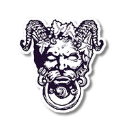

Tian Lan
SYSTEMS-MINDED BUILDER
I research many things: history, systems, and people. I love deep strategy board games and turn new ideas into real, useful tools with code.
-
History
curious -
Strategy
minded -
Vibe coding
ship
Projects

Blood on the Clocktower Grimoire
A custom grimoire and quick reference tool for Blood on the Clocktower storytellers, modified from the official grimoire with extra features.
↗ grimoire.skylan.devBGG Collection Tool
Manage, analyze, and maintain information for a personal board game collection by reading data from BoardGameGeek.
↗ bgg.skylan.devLearning Notes
A Markdown-based notebook where I collect, connect, and revisit knowledge that catches my attention.
↗ note.skylan.devResume
A concise overview of my experience, projects, and technical background.
↗ skylan.dev/resumeAbout
I am a systems-minded builder who enjoys following curiosity wherever it goes. History gives me long arcs and strange constraints to think with.
Heavy strategy board games give me systems, incentives, hidden information, and deliciously difficult decisions to pull apart.
I also run Blood on the Clocktower games as a storyteller. These days I use vibe coding to turn ideas, tools, and experiments into working apps.